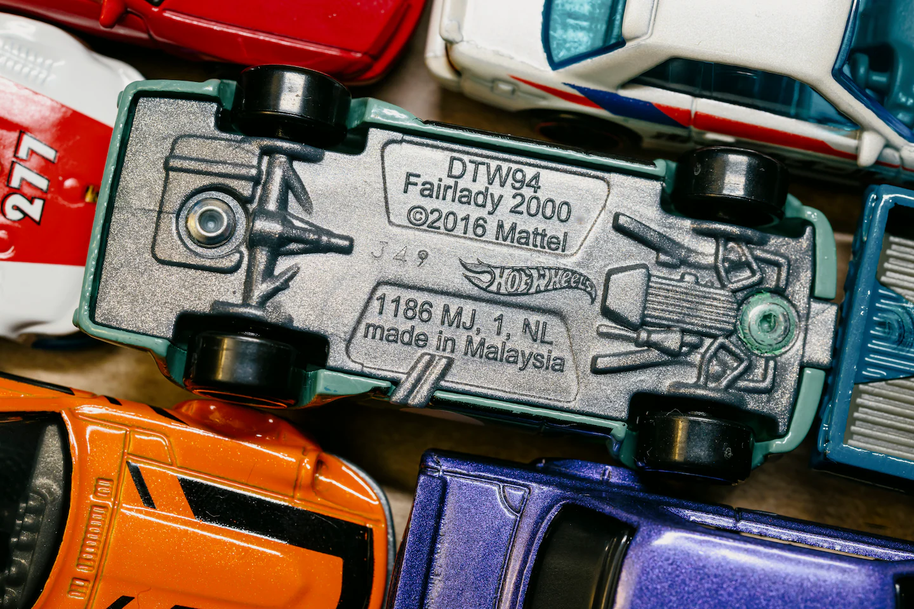

(Drithi Kandoor for The Washington Post)
Erwin R. Tiongson is a professor of the practice in Georgetown University’s Global Human Development Program.
What if I said you could read real-world history on the underside of your kids’ Hot Wheels?
In my Philippine childhood in the 1970s, my brother Hector and I played with die-cast toy cars. I remember the first time I looked at the underside of these cars, soon after I had learned to read, and realized they had been made in different countries in different years. Some were made in the United Kingdom and the United States; the newer ones were made in Japan. Decades later, as my work as an economist brought my family to the United States, my two children got toy cars nearly identical to mine — first made in China and, later, Vietnam.
We now have a small collection of these cars, and occasionally I use them as a teaching tool. I ask students in my economics classes to inspect the cars’ undersides, and together we trace the gradual movement of toy car manufacturing: from England and the United States in the 1960s to Japan in the mid-1970s, from South Korea in the mid-1980s to China in the late 1990s and Vietnam after.

Hot Wheels with a manufacturing stamp from Malaysia, dated 1979. (AJ Chavar for The Washington Post)
I tell them the process of making die-cast toy cars is nearly unchanged since the 1960s and has been steadily passed from one country to another, marking the beginning of the transformation of entire economies. We observe how toy-export data mirrors worldwide trends in industrial sector employment over the past 60 years: the gradual rise of toy manufacturing and toy exports in developing economies, the expansion of light manufacturing in those countries, followed by the growth of more complex production and the entire industrial sector, soon dwarfing the traditional agriculture sector and lifting people out of low-pay, low-productivity work.
And then we see, almost as rapidly, the decline of the industrial sector in a now-richer economy, as production at lower prices becomes available from the next industrializing country. In the graphical representation of this phenomenon, individual countries’ data looks like hills all over the world and over time; it is a beautiful, astonishing understatement of how countless lives have been changed in the process.
This much world history reflected in a handful of toy cars.
Several years ago, at the end of those class conversations on economic transformation, I would boldly tell my students: If you would like to know where the world economy is headed, go to a toy store and look at the underside of a die-cast car. I was confident they would find some from Vietnam, considering my children’s cars and the country’s rapid transformation. Or maybe from fast-growing or Ethiopia.
I was wrong.
The covid-19 pandemic arrived, and the industrial world reeled from massive supply chain disruptions. In early 2022, Mattel — which makes Hot Wheels and Matchbox toy cars — made a move to “near-source” some production, bringing its supply chain closer to the United States and away from Asia and China: It announced an injection of $50 million to its factory in Mexico. So I expected to start seeing toy cars manufactured in Mexico.
Wrong again. In two years, sometimes things change, sometimes things remain the same.
This past holiday season, my children and I took turns visiting the toy section of a large store just outside Washington. It was like a game: find a random car, take a picture of the box and the car’s underside, send it to our group chat. We found none from Bangladesh, Ethiopia or Mexico. They came from Malaysia, Thailand and, surprisingly, China, still. In the journey toward the inevitable transformation of economies, it seemed the world had taken a few detours.
Hot Wheels with a manufacturing stamp from Malaysia, dated 2016. (AJ Chavar for The Washington Post)
It turns out that near-sourcing is more complicated than expected, as recently documented in the case of Mexico. Part of the difficulty involves scaling and coordination: As more businesses seek nearby production facilities, the nearby economy, with its limited human and infrastructure resources, is quickly overwhelmed. And just as critical pieces in toy manufacturing are still imported from China, inputs from China more generally are integral parts of more sophisticated global supply chains.
In addition, toy manufacturing reflects not only the promise of industrialization but also its disappointments. In late 2022, Mattel commemorated its 40th year of manufacturing in Malaysia by announcing the growth of its Hot Wheels factory there, the world’s biggest. This was a positive development, but Malaysia’s economy reached middle-income status decades ago; in the familiar pattern, it would by now have progressed to manufacturing more complex, profitable products. Instead, the country has remained in what economists Indermit Gill and Homi Kharas defined as the “middle-income trap” — caught between developing and rich nations.
As my children and I inspected this generation of toy cars, I struggled to explain what we were seeing. Not because toy cars do not tell us something about the world but because they do. They reflect the world’s reality, including its surprises.